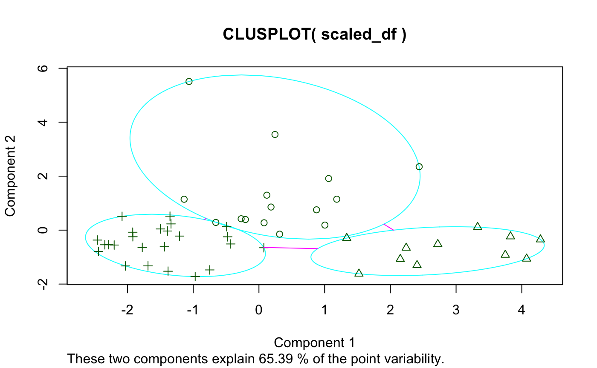
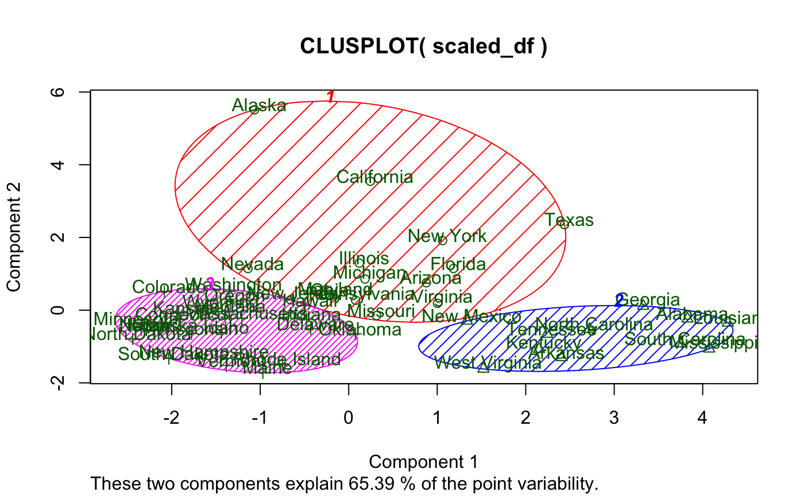

vignettes/creating_the_package.Rmd
creating_the_package.RmdDeveloping an R package is simple enough. There are some well built tools by R gurus such as Hadley Wickham, Ramnath Vaidyanathan, and Jim Hester that make constructing a simple downloadable GitHub hosted package a slick process. However, when you delve into the dark realm of package development using a language other than R and the even less lucid world of CRAN submission, things can get real.
I first thought of developing a dynamic clustering package while studying k-means clustering algorithms in BYU-Idaho’s Machine Learning and Data Mining class (an excellent course, by the way). The package we used–and to my understanding the most widely used package–for k-means cluster visualization is called cluster and contains the function clusplot. I’ll demonstrate using state.x77 found in the datasets package:

And here’s if you add some options:

While I like the idea of principal component analysis (PCA) being applied to cluster visualization, there are definitely some flaws with this visual, primarily:
These visualizations may have their place, and I in no way discount the rest of cluster based on clusplot()–just to be clear. I’m sure the author of the package is a far better R programmer and statistician than I am.
The time to choose the topic of my Senior Project came and I needed to think of something quick. I’d wanted to learn D3.js for quite some time, but no class on campus offered it. So, I determined to build a new package for R which utilized D3.js to create dynamic visualizations for k-means clustering.
The only experience I’d had previous with package development were a couple single-function-ers I made for classmates and one larger one for a job I had which essentially turned out to be a hacky agglomerative mass of functions to interact with the Open Science Framework API in very application specific ways. None of my packages had been submitted to CRAN.
Further, I had no experience whatsoever with D3.js, let alone using it in an R package.
Turns out D3.js is a little more complex than ggplot. There was a steep learning curve, and I’m not without complaints, but I quickly realized that there are some beautiful things you can do with a little dynamic magic.
Take the problems of clusplot() for example:
klustR is a simple package (at least at the point of its initial release–I may add more features later) consisting of six functions: pcplot(), pacoplot(), and their associated Shiny reactive friends. pcplot() seeks to solve the issues with clusplot(), while pacoplot() is a little something extra–a parallel coordinates plot.
Rather than talk about the features, I’ll demonstrate.
Here’s a basic example using the data and k-means analysis from above:
Some things to note:
We’ve also got options here. We can change color scales, label sizes, point sizes, and toggle grid-lines.
Another great option for cluster visualization is the parallel coordinates plot.
Here’s an example:
Some things to note:
pacoplot() has the same options as pcplot() except grid-lines as that would make no sense on a parallel coordinates plot, and with the addition of measures which allows the user to specify their own functions to be evaluated for the average lines and the upper and lower bounds of the intervals.
D3.js is a wonderful tool for building some very high-end visualizations. However, it takes time. You’d be much better off building simple visualizations in ggplot. Furthermore, iterating through data for different types of plot components can be a bit of a pain. To illustrate, I had to use three different JSON Objects just to create the average lines, bars, and bar lines for pacoplot(). I’m positive there are better ways to do what I did, but they aren’t intuitive for the beginner or casual plotter.
Despite taking many statistics classes and being currently enrolled in a linear algebra class, I’d never heard of PCA before. For those who may be unfamiliar with it, you can think of it as a simple method for reducing dimensionality in data while maintaining as much information about the variability in the data as possible. In even simpler terms, it turns a lot of columns into less columns.
Long story short, I learned PCA by following some very informative tutorials such as this. I learned about eigenvectors and eigenvalues and how these could be used to gather information about variance to then be applied in dimensionality reduction.
I ended up writing my own PCA calculating function to be used in klustR that fulfills its specific needs. This can be found in the klustR GitHub repository in utils.R.
CRAN is “The Comprehensive R Archive Network.” It is volunteer run and a stickler for rules. CRAN has a very lengthy set of requirements that a package must meet in order to even be considered by a real human being for candidacy in their repository. If you’ve submitted a package before, and it was accepted on your first try, count yourself remarkably lucky as Hadley Wickham himself says he frequently has packages rejected by CRAN. CRAN volunteers can be exceptionally rude, so don’t take it personally, they just have a lot on their plate. Here’s a great resource that I followed to submit klustR.